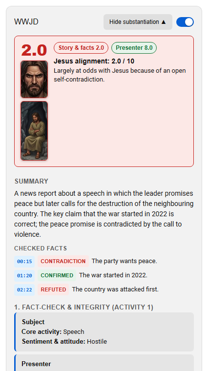
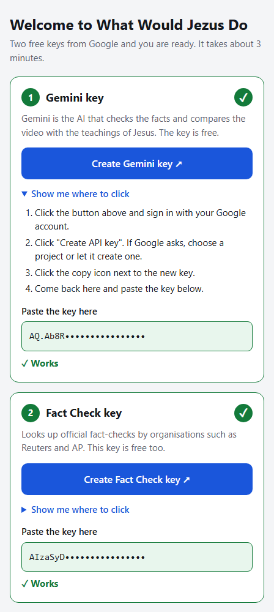

Fact check
The key claims in the video are checked with live web search and against official fact-checks (Reuters, AP, AFP and others, through the Google Fact Check Tools API). Every verdict shows its sources; self-contradiction is flagged.
What Would Jezus Do checks the claims in a video, sums up its message, and weighs what is said and done against the Ten Commandments and the teachings of Jesus, with a link to every Bible verse it refers to.
Free and open source (MIT). You use two free keys from Google; setup takes about three minutes.

The key claims in the video are checked with live web search and against official fact-checks (Reuters, AP, AFP and others, through the Google Fact Check Tools API). Every verdict shows its sources; self-contradiction is flagged.
A short summary of what the video says, with the list of checked facts. Click a timestamp to jump to that moment. In live mode the panel follows the video as it plays.
The story and its facts, and the presenter, each get their own score from 0 to 10 against 25 guidelines from the Ten Commandments and the Gospels, each with clickable Bible references.
chrome://extensions or edge://extensions and turn on
Developer mode.
Listings in the Chrome Web Store and Edge Add-ons are being prepared. Until then, install from GitHub as above. The Android app is available as an APK from GitHub. An installation video will be added here.
The app runs on your own device and talks directly to Google with your own keys. The welcome page has a big button to the exact page where each key is made, checks every key as soon as you paste it, and explains in plain words what to do if something is wrong.
Use two separate keys: keys made in AI Studio only work for Gemini. Prefer Claude? You can switch to a (paid) Anthropic key later in Settings.

Yes. The extension and the app are free and open source. Both keys are free from Google; Gemini's free tier has a daily limit that Google sets and can change. A video you analysed before is shown from the cache and costs nothing.
The video's transcript, title and channel go to the AI service you chose (Google Gemini by default, or Anthropic Claude). Short search terms for each claim go to the Google Fact Check Tools API. Your keys are stored on your device and are only sent to those services. There is no server of ours in between and no tracking. See the privacy policy.
Videos with captions, either added by the maker or generated automatically by YouTube. The analysis reads the transcript, so a video without captions cannot be analysed.
Story & facts scores the people and events the video is about, based on the checked facts. Presenter scores how the narrator or host tells it: honest reporting of something bad does not lower the presenter's score. When the presenter is the subject (a speech, vlog or sermon), there is one score.
Treat it as a careful second opinion, not as a final judgement. An AI can be wrong, and not every claim has an official fact-check. That is why each verdict shows its sources and each evaluation links to the Bible passages it relies on: check them yourself.
Dutch, English, German, French, Spanish, Italian and Portuguese. The language you pick sets the interface, the analysis and the Bible links: Dutch links to the NBV21 on debijbel.nl, the other languages to BibleGateway (NIV, HOF, BDS, NVI, NR2006 and NVI-PT).
Jezus is the Dutch spelling of Jesus.